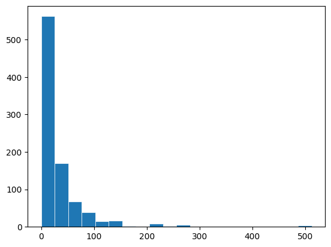
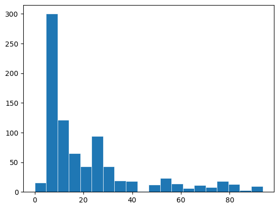
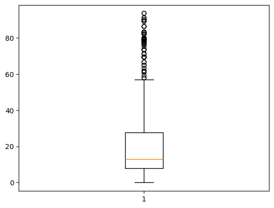
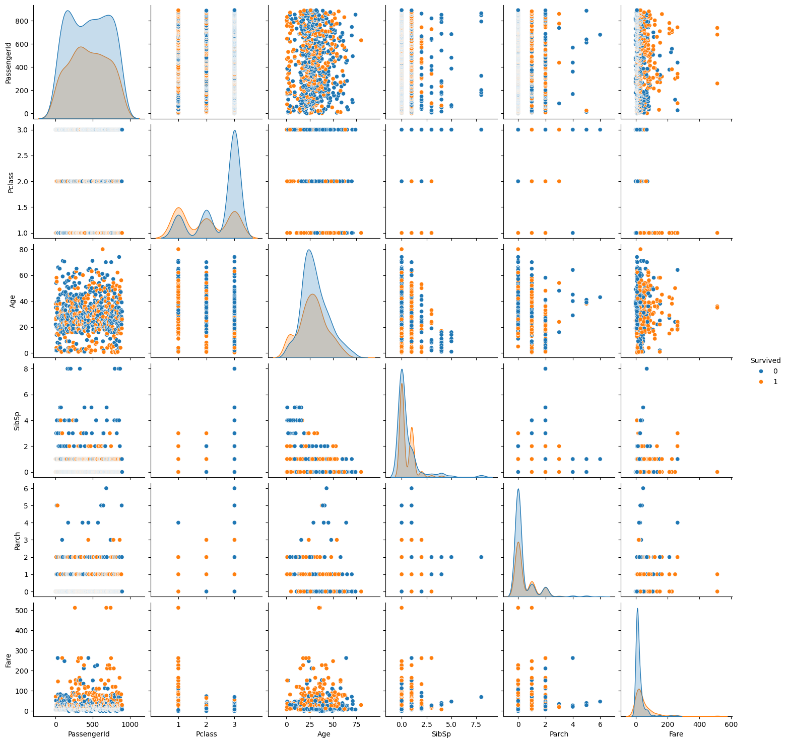
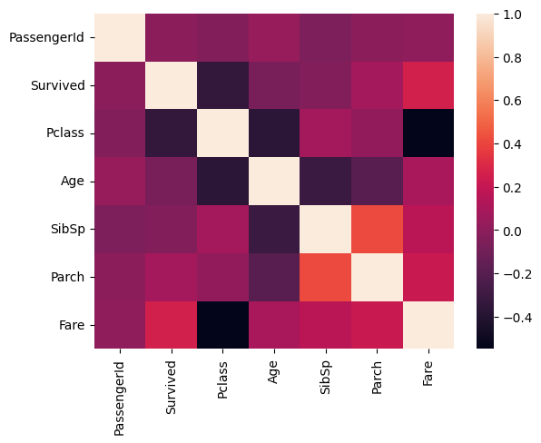

Análise Exploratória dos Dados#
O principal passo de um projeto de Ciência de Dados, bem antes de usar modelos de Aprendizado de Máquinas, é entender os seus dados!
Algumas etapas são fundamentais nesse processo!
Para isso, vamos utilizar o dataset do titanic
As colunas desse dataset são:
Passenger ID: ID do passageiro (número único para cada um dos passageiros)
Survived: sobrevivente (0 = Não, 1 = Sim)
Pclass: Classe da passagem (1 = primeira classe, 2 = segunda classe, 3 = terceira classe)
Name: nome do passageiro
Sex: Gênero do passageiro
Age: Idade (em anos) do passageiro
SibSp: número de irmãos / cônjuges a bordo do Titanic
Parch: número de pais / filhos a bordo do Titanic
Ticket: número do ticket
Fare: tarifa da passagem
Cabin: número da cabine
Embarked: porto de embarque (C = Cherbourg, Q = Queenstown, S = Southampton)
# Importando o pandas
import pandas as pd
# Importando a base de dados
base = pd.read_csv('../../data/databaseTitanic.csv')
# Visualizando as 10 primeiras linhas
base.head(10)
| PassengerId | Survived | Pclass | Name | Sex | Age | SibSp | Parch | Ticket | Fare | Cabin | Embarked | |
|---|---|---|---|---|---|---|---|---|---|---|---|---|
| 0 | 1 | 0 | 3 | Braund, Mr. Owen Harris | male | 22.0 | 1 | 0 | A/5 21171 | 7.2500 | NaN | S |
| 1 | 2 | 1 | 1 | Cumings, Mrs. John Bradley (Florence Briggs Th... | female | 38.0 | 1 | 0 | PC 17599 | 71.2833 | C85 | C |
| 2 | 3 | 1 | 3 | Heikkinen, Miss. Laina | female | 26.0 | 0 | 0 | STON/O2. 3101282 | 7.9250 | NaN | S |
| 3 | 4 | 1 | 1 | Futrelle, Mrs. Jacques Heath (Lily May Peel) | female | 35.0 | 1 | 0 | 113803 | 53.1000 | C123 | S |
| 4 | 5 | 0 | 3 | Allen, Mr. William Henry | male | 35.0 | 0 | 0 | 373450 | 8.0500 | NaN | S |
| 5 | 6 | 0 | 3 | Moran, Mr. James | male | NaN | 0 | 0 | 330877 | 8.4583 | NaN | Q |
| 6 | 7 | 0 | 1 | McCarthy, Mr. Timothy J | male | 54.0 | 0 | 0 | 17463 | 51.8625 | E46 | S |
| 7 | 8 | 0 | 3 | Palsson, Master. Gosta Leonard | male | 2.0 | 3 | 1 | 349909 | 21.0750 | NaN | S |
| 8 | 9 | 1 | 3 | Johnson, Mrs. Oscar W (Elisabeth Vilhelmina Berg) | female | 27.0 | 0 | 2 | 347742 | 11.1333 | NaN | S |
| 9 | 10 | 1 | 2 | Nasser, Mrs. Nicholas (Adele Achem) | female | 14.0 | 1 | 0 | 237736 | 30.0708 | NaN | C |
# Visualizando as 10 últimas linhas
base.tail(10)
| PassengerId | Survived | Pclass | Name | Sex | Age | SibSp | Parch | Ticket | Fare | Cabin | Embarked | |
|---|---|---|---|---|---|---|---|---|---|---|---|---|
| 881 | 882 | 0 | 3 | Markun, Mr. Johann | male | 33.0 | 0 | 0 | 349257 | 7.8958 | NaN | S |
| 882 | 883 | 0 | 3 | Dahlberg, Miss. Gerda Ulrika | female | 22.0 | 0 | 0 | 7552 | 10.5167 | NaN | S |
| 883 | 884 | 0 | 2 | Banfield, Mr. Frederick James | male | 28.0 | 0 | 0 | C.A./SOTON 34068 | 10.5000 | NaN | S |
| 884 | 885 | 0 | 3 | Sutehall, Mr. Henry Jr | male | 25.0 | 0 | 0 | SOTON/OQ 392076 | 7.0500 | NaN | S |
| 885 | 886 | 0 | 3 | Rice, Mrs. William (Margaret Norton) | female | 39.0 | 0 | 5 | 382652 | 29.1250 | NaN | Q |
| 886 | 887 | 0 | 2 | Montvila, Rev. Juozas | male | 27.0 | 0 | 0 | 211536 | 13.0000 | NaN | S |
| 887 | 888 | 1 | 1 | Graham, Miss. Margaret Edith | female | 19.0 | 0 | 0 | 112053 | 30.0000 | B42 | S |
| 888 | 889 | 0 | 3 | Johnston, Miss. Catherine Helen "Carrie" | female | NaN | 1 | 2 | W./C. 6607 | 23.4500 | NaN | S |
| 889 | 890 | 1 | 1 | Behr, Mr. Karl Howell | male | 26.0 | 0 | 0 | 111369 | 30.0000 | C148 | C |
| 890 | 891 | 0 | 3 | Dooley, Mr. Patrick | male | 32.0 | 0 | 0 | 370376 | 7.7500 | NaN | Q |
# Verificando o tamanho da base
base.shape
(891, 12)
Visualizando um resumo das informações#
# Verificando as informações
base.info()
<class 'pandas.core.frame.DataFrame'>
RangeIndex: 891 entries, 0 to 890
Data columns (total 12 columns):
# Column Non-Null Count Dtype
--- ------ -------------- -----
0 PassengerId 891 non-null int64
1 Survived 891 non-null int64
2 Pclass 891 non-null int64
3 Name 891 non-null object
4 Sex 891 non-null object
5 Age 714 non-null float64
6 SibSp 891 non-null int64
7 Parch 891 non-null int64
8 Ticket 891 non-null object
9 Fare 891 non-null float64
10 Cabin 204 non-null object
11 Embarked 889 non-null object
dtypes: float64(2), int64(5), object(5)
memory usage: 83.7+ KB
# Contando a quantidade de valores nulos
base.isnull().sum()
PassengerId 0
Survived 0
Pclass 0
Name 0
Sex 0
Age 177
SibSp 0
Parch 0
Ticket 0
Fare 0
Cabin 687
Embarked 2
dtype: int64
# Verificando as informações estatísticas
base.describe()
| PassengerId | Survived | Pclass | Age | SibSp | Parch | Fare | |
|---|---|---|---|---|---|---|---|
| count | 891.000000 | 891.000000 | 891.000000 | 714.000000 | 891.000000 | 891.000000 | 891.000000 |
| mean | 446.000000 | 0.383838 | 2.308642 | 29.699118 | 0.523008 | 0.381594 | 32.204208 |
| std | 257.353842 | 0.486592 | 0.836071 | 14.526497 | 1.102743 | 0.806057 | 49.693429 |
| min | 1.000000 | 0.000000 | 1.000000 | 0.420000 | 0.000000 | 0.000000 | 0.000000 |
| 25% | 223.500000 | 0.000000 | 2.000000 | 20.125000 | 0.000000 | 0.000000 | 7.910400 |
| 50% | 446.000000 | 0.000000 | 3.000000 | 28.000000 | 0.000000 | 0.000000 | 14.454200 |
| 75% | 668.500000 | 1.000000 | 3.000000 | 38.000000 | 1.000000 | 0.000000 | 31.000000 |
| max | 891.000000 | 1.000000 | 3.000000 | 80.000000 | 8.000000 | 6.000000 | 512.329200 |
A cardinalidade nos ajuda a saber a quantidade de dados distintos em uma coluna
Se tivermos muitos valores distintos, provavelmente aquela coluna não será uma boa opção para usarmos no modelo
Matematicamente, cardinalidade é o número de elementos de um conjunto
Podemos verificar a cardinalidade usando o
.nunique()
base.nunique()
PassengerId 891
Survived 2
Pclass 3
Name 891
Sex 2
Age 88
SibSp 7
Parch 7
Ticket 681
Fare 248
Cabin 147
Embarked 3
dtype: int64
Visualizando de forma gráfica#
Para visualizar essas informações de maneira gráfica, podemos utilizar o matplotlib
# Importando o matplotlib
import matplotlib.pyplot as plt
# Verificando o histograma das tarifas
x = base.Fare
fix, ax = plt.subplots()
ax.hist(x, bins=20, linewidth=0.5, edgecolor="white")
plt.show()

# Verificando o histograma das tarifas apenas para tarifas menores que 100 libras
x = base[base.Fare < 100].Fare
fix, ax = plt.subplots()
ax.hist(x, bins=20, linewidth=0.5, edgecolor="white")
plt.show()

# Verificando o boxplot para a coluna Fare
x = base[base.Fare < 100].Fare
fix, ax = plt.subplots()
ax.boxplot(x)
plt.show()

Dependendo do visual, outras bibliotecas já podem ter opções mais prontas para usarmos, como o caso do pairplot no seaborn
Como cientistas, devemos escolher a ferramenta que melhor resolve o nosso problema
O pairplot no seaborn:
# Importando o seaborn
import seaborn as sns
# Criando o pairplot
sns.pairplot(base, hue="Survived")
<seaborn.axisgrid.PairGrid at 0x21d3e0af380>

# Criando uma matriz de correlação entre as variáveis
base.corr(numeric_only=True)
| PassengerId | Survived | Pclass | Age | SibSp | Parch | Fare | |
|---|---|---|---|---|---|---|---|
| PassengerId | 1.000000 | -0.005007 | -0.035144 | 0.036847 | -0.057527 | -0.001652 | 0.012658 |
| Survived | -0.005007 | 1.000000 | -0.338481 | -0.077221 | -0.035322 | 0.081629 | 0.257307 |
| Pclass | -0.035144 | -0.338481 | 1.000000 | -0.369226 | 0.083081 | 0.018443 | -0.549500 |
| Age | 0.036847 | -0.077221 | -0.369226 | 1.000000 | -0.308247 | -0.189119 | 0.096067 |
| SibSp | -0.057527 | -0.035322 | 0.083081 | -0.308247 | 1.000000 | 0.414838 | 0.159651 |
| Parch | -0.001652 | 0.081629 | 0.018443 | -0.189119 | 0.414838 | 1.000000 | 0.216225 |
| Fare | 0.012658 | 0.257307 | -0.549500 | 0.096067 | 0.159651 | 0.216225 | 1.000000 |
# Utilizando o heatmap do seaborn para tornar essa matriz mais visual
sns.heatmap(base.corr(numeric_only=True))
<Axes: >
